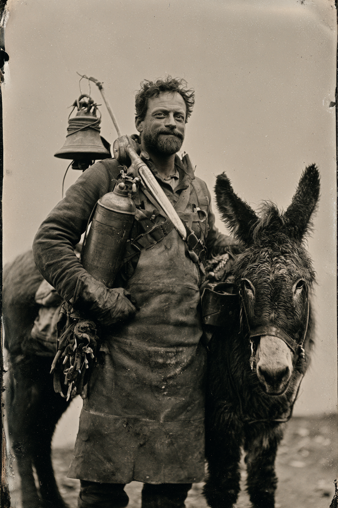

Archetyp: MAD SCIENTIST (Verrückte Wissenschaftler)
Kann kein Wort lesen, kann seinen eigenen Namen nicht schreiben, und hat es noch nie nicht wieder zum Laufen gebracht.
| Agility | d4 | 0 |
| Smarts | d8 | 2 |
| Spirit | d6 | 1 |
| Strength | d6 | 1 |
| Vigor | d6 | 1 |
| Skill | Attr. | Die | Pts. |
|---|---|---|---|
| Weird Science | Sma | d8 | 3 |
| Repair | Sma | d8 | 3 |
| Healing | Sma | d6 | 2 |
| Science | Sma | d6 | 2 |
| Notice | Sma | d6 | 1 |
| Survival | Sma | d4 | 1 |
| Weapon | Range | Damage | AP | RoF | Wt. | Cost |
|---|---|---|---|---|---|---|
| Beil | – | Stä+W4 | – | – | 1,5 | $1 |
| mittlere improvisierte Waffe, aber er meint es als Werkzeug | ||||||
| Einläufige Flinte (12) | 12/24/48 | 1–3W6 | – | 1 | 3 | $25 |
| 1 Schuss, +2 Schießen | ||||||
| Schrot, 25 Schuss | $2,50 | 1,5 | ||||
The Pelican (Heilen, 3 MP, Berührung) · Fehlfunktion: das Rückschlagventil kehrt sich um
Erzfresser: 20 MP · bei einer 13 auf der Fehlfunktionstabelle dauerhaft Geistersteinfieber
Hintergrund. Pigeon wuchs auf einem Bergungskahn in den Missouri-Niederungen auf und riss Kesselblech und Messingarmaturen von ersoffenen Dampfern, um sie nach Gewicht zu verkaufen. Er hat nie ein Buch, eine Zeitung oder ein Etikett gelesen; alles, was er weiß, hat er gelernt, indem er es an Deck auseinandernahm und falsch wieder zusammensetzte, bis es aufhörte, falsch zu sein. Seine Erfindungen sehen aus wie das, was sie sind — Kirchenglocken, Feuerlöscher und Sargbeschläge, mit Kupferdraht und Hoffnung zusammengebunden — und sie funktionieren, was jeden studierten Mann beleidigt, der je eine gesehen hat. Er schloss sich der Posse an, nachdem er einem Fremden die Rippen mit einem Gerät aus einem Feuerlöscher und einem Pelikanschnabel aus verlöteten Löffelstielen wieder zusammengezogen hatte, und der Fremde, ein anständiger Kerl, ihn nicht zurückließ.
Build. Geschicklichkeit W4, Verstand W8, Geist W6, Stärke W6, Konstitution W6 · Parade 2, Robustheit 5 Verrückte Wissenschaft W8, Reparieren W8, Heilkunde W6, Naturwissenschaften W6, Bemerken W6, Überleben W4 Talente: Arcane Background (Mad Scientist), Ore Eater (Erzfresser — er mahlt Geisterstein fein und streut ihn wie Salz übers Essen: +5 Machtpunkte, gesamt 20. Der Preis: würfelt er auf der Fehlfunktionstabelle eine 13, bekommt er nicht den Gremlin, sondern dauerhaft Geistersteinfieber), Mr. Fix It (Bastler — +2 auf Reparieren, bei Steigerung halbe Zeit; kontert direkt Störung und Ausfall) Handicaps: Curious (Neugierig) — Major: er macht die Kiste auf. Er macht immer die Kiste auf. Er hat den Sarg aufgemacht. · Illiterate (Analphabet) — Minor: kann keine Warnung, keinen Vertrag, keine Kartenlegende und keinen Grabstein lesen · Loyal — Minor: lässt keinen Mann auf der Straße liegen, kein Maultier auf der Straße liegen, und wäre zweimal fast wegen eines Hundes erschossen worden
Apparate.
The Pelican — Heilen (3 MP, Berührung)
Ein Messing-Feuerlöschertank von einem ausgebrannten Kansas-Pacific-Waggon, mit Geschirrleder quer über die Brust geschnallt, bedient über eine Fußpumpe, die er auf den Boden stellt und auf der er steht. Die Düse ist ein sechzig Zentimeter langer Pelikanschnabel, verlötet aus Hotel-Löffelstielen. Er sprüht einen heißen grauen Nebel, der nach verbranntem Haar und Kupfermünzen riecht. Fleisch schließt sich zischend. Die Narbe kommt immer fein und grau, wie in die Haut eingearbeitete Asche. Fehlfunktion — der Pelikan trinkt. Das Rückschlagventil kehrt sich um, und der Schnabel zieht, statt zu drücken. Der Nebel läuft rückwärts den Schlauch hinauf, die Wunde des Patienten reißt weiter auf als zuvor, und Pigeon hustet die nächste Stunde grauen Grus. Er entschuldigt sich die ganze Zeit. Es hilft nicht.
The Hush — Abstumpfen (2 MP)
Eine gesprungene Tischglocke aus einer überfluteten Missouri-Kirche, fest in Kupferdraht gewickelt und an einem Stangengestell auf dem Rücken hängend, mit einer eingesperrten Geisterstein-Glut als Klöppel. Er schlägt sie einmal. Der Ton klingt nicht ab. Alle im Ring hören auf zu spüren, was mit ihnen nicht stimmt — der Lahme geht, der Mann mit dem gebrochenen Arm vergisst, dass er gebrochen ist, und keinem von beiden geht es tatsächlich besser. Fehlfunktion — the Hush won’t hush. Der Ton läuft weiter, nachdem er ihn stoppen will, und er kann ihn nicht dämpfen, umwickeln oder vergraben. Nach etwa einer Minute hören die Leute eine zweite Glocke, die irgendwo hinter dem Hügel antwortet — und sie kommt näher, und sie hält den Takt.
(Ebenfalls im Gepäck: ein halbfertiges Gebilde aus Ofenrohr und Glasglocke, das er die Verkleinerungsglocke nennt. Er will damit einen Mann klein genug machen, um durch ein Gefängnisfenster zu schlüpfen. Es funktioniert noch nicht — Schrumpfen ist Fortgeschritten.)
Ausrüstung: 250 Dollar, und man sieht es. Eine Erfinderschürze (er hat sich dreimal selbst in Brand gesetzt), eine Segeltuchrolle unpassender Werkzeuge mit drei Griffen im selben roten Lappen, eine Kaffeedose unraffinierter Geistersteinsplitter (halbiert Reichweite oder Laufzeit von allem, was damit betrieben wird — raffinierte Patronen kann er sich nicht leisten), ein Beil und ein bösartiges graues Maultier namens Vinegar, das einzige Lebewesen, das in der Nähe der Hush stillsteht.
Aufhänger — der Mann im Kahn. Er ist kein Autodidakt, und genau darüber lügt er, ohne es zu wissen. In dem Winter, in dem er neun wurde, schloss ihn ein Hochwasser elf Tage allein auf einem halb gesunkenen Bergungskahn ein, mit einem Toten im vorderen Laderaum, und der Tote sprach die ganze Zeit mit ihm und erklärte ihm, wozu ein Ventil da ist. Er hat es als Fiebertraum abgelegt. Zwei Dinge sprechen dagegen. Erstens: er isst Geisterstein, und Erzfresser bedeutet, dass ein schlechter Wurf ihm Geistersteinfieber einbringt — eine Konstitutionsprobe zu Beginn jeder weiteren Sitzung, bei deren Patzer schreiende Flammen aus ihm herausfahren und er als Brennender Toter wieder aufsteht. Zweitens, leiser: ein Mann, der nicht lesen kann, macht seit Kurzem Zeichen auf die Innenseite seines Werkzeugkastendeckels. Es sind keine Kratzer. Es ist Schrift. Niemand am Tisch erkennt die Sprache, und Pigeon erinnert sich nicht daran, sie gemacht zu haben.
Warum es Spaß macht. Du bist der Grund, warum alle noch stehen, mit einer Ausrüstung, die sichtbar nicht existieren dürfte — und du hast zwanzig Machtpunkte und überhaupt kein Sicherheitsnetz: kein Wahres Genie, keine Bennies, um dich aus dem W20 freizukaufen. Wenn es schiefgeht, darfst du nicht diskutieren; du legst dich mit deinem Werkzeug auf den Boden und reparierst es, während auf Leute geschossen wird.
Regelgrundlage: Regelnotizen · Archetyp-Notizen